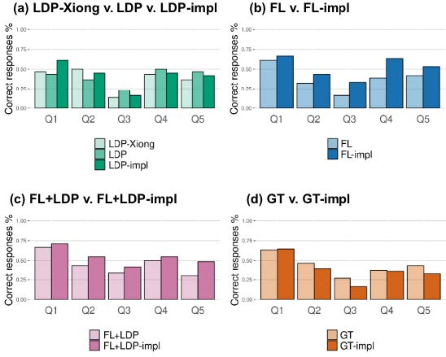
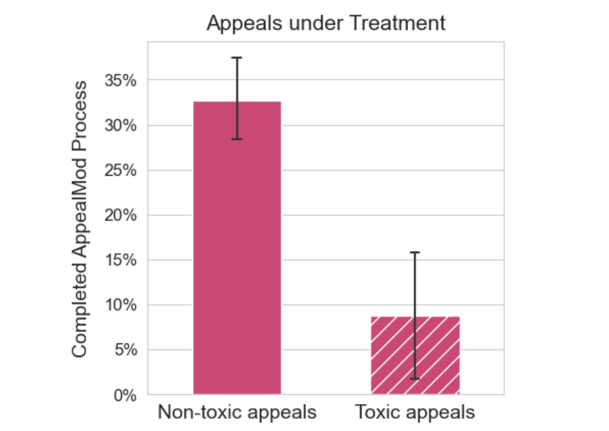
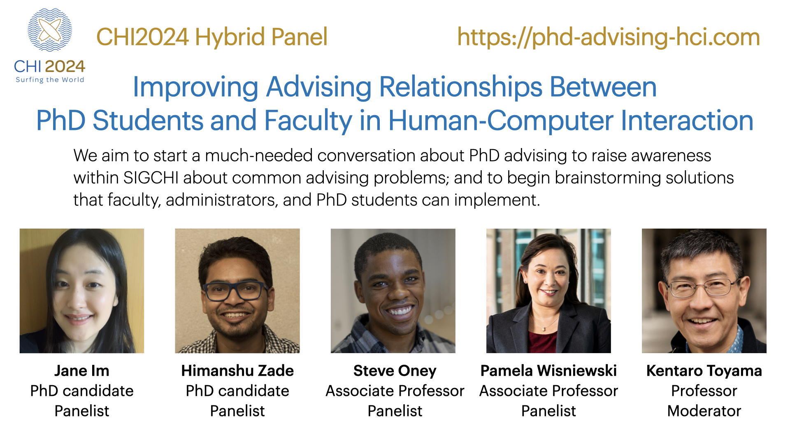
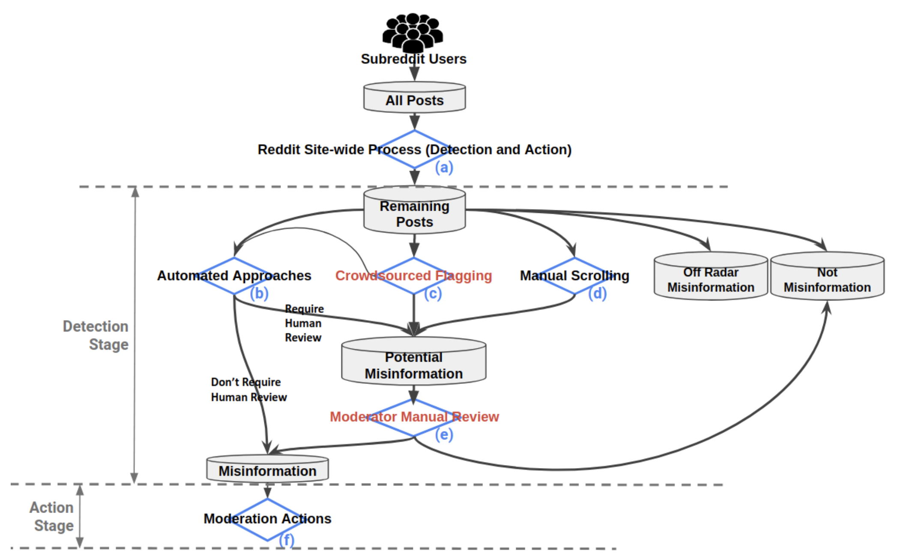
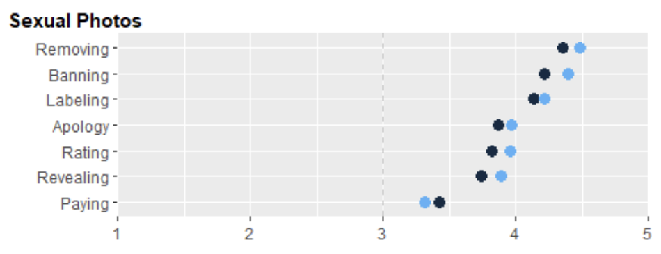
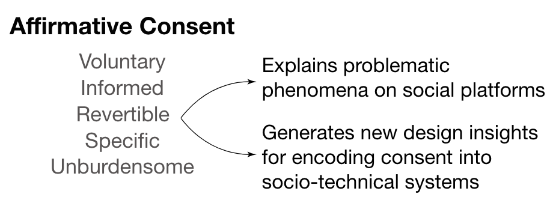
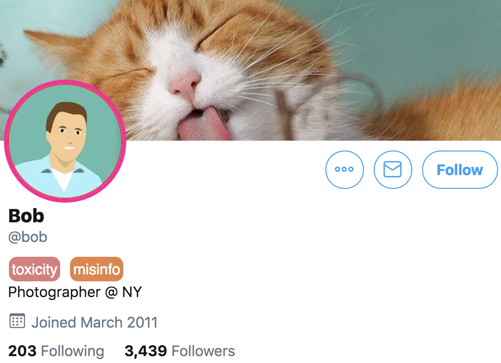
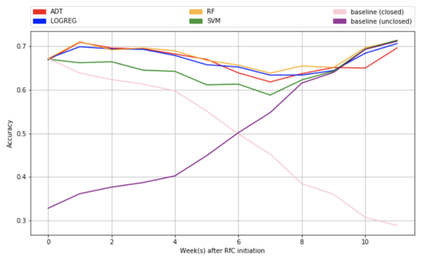

Peer-Reviewed Publications
Last update: July 20262026

Enabling Sensitive Conversations with Consent Boundaries: Moa, a Platform for Discussing PhD Advising Relationships
Jane Im, Kentaro Toyama
CSCW 2026
Jane Im, Kentaro Toyama
CSCW 2026
"I Didn’t Share Anything Personal": Privacy Perceptions and Behaviors of Low-Income, Low-Digital-Literacy ChatGPT Users in India
Jasmeet Kaur, Jane Im
SOUPS 2026 Poster
Jasmeet Kaur, Jane Im
SOUPS 2026 Poster
2025

Misalignments and Demographic Differences in Expected and Actual Privacy Settings on Facebook
Byron Lowens, Sean Scarnecchia, Jane Im, Tanisha Afnan, Annie Chen, Yixin Zou, Florian Schaub
PoPETs 2025
Byron Lowens, Sean Scarnecchia, Jane Im, Tanisha Afnan, Annie Chen, Yixin Zou, Florian Schaub
PoPETs 2025

User-centric Textual Descriptions of Privacy-Enhancing Technologies For Ad Tracking and Analytics
Lu Xian, Song Mi Lee-Kan, Jane Im, Florian Schaub
PoPETs 2025
Lu Xian, Song Mi Lee-Kan, Jane Im, Florian Schaub
PoPETs 2025
2024

"I know even if you don't tell me": Understanding Users' Privacy Preferences Regarding AI-based Inferences of Sensitive Information for Personalization
Sumit Asthana, Jane Im, Zhe Chen, Nikola Banovic
CHI 2024
Sumit Asthana, Jane Im, Zhe Chen, Nikola Banovic
CHI 2024

AppealMod: Inducing Friction to Reduce Moderator Workload of Handling User Appeals
Shubham Atreja, Jane Im, Paul Resnick, Libby Hemphill
CSCW 2024
Shubham Atreja, Jane Im, Paul Resnick, Libby Hemphill
CSCW 2024


Improving Advising Relationships Between PhD Students and Faculty in Human-Computer Interaction
Jane Im, Himanshu Zade, Steve Oney, Pamela Wisniewski, Kentaro Toyama
CHI 2024 Extended Abstract (Panel Proposal)
Jane Im, Himanshu Zade, Steve Oney, Pamela Wisniewski, Kentaro Toyama
CHI 2024 Extended Abstract (Panel Proposal)
2023

Less is Not More: Improving Findability and Actionability of Privacy Controls for Online Behavioral Advertising
Jane Im, Ruiyi Wang, Weikun Lyu, Nick Cook, Hana Habib, Lorrie Cranor, Nikola Banovic, Florian Schaub
CHI 2023
Jane Im, Ruiyi Wang, Weikun Lyu, Nick Cook, Hana Habib, Lorrie Cranor, Nikola Banovic, Florian Schaub
CHI 2023
Covered by The Wall Street Journal (The article is behind a paywall, but UMSI also wrote about it here.)
Invited by FTC to present to policymakers at PrivacyCon 2024
Invited by FTC to present to policymakers at PrivacyCon 2024

Searching For or Reviewing Evidence Improves Crowdworkers' Misinformation Judgments and Reduces Partisan Bias
Paul Resnick, Aljohara Alfayez, Jane Im, Eric Gilbert
Collective Intelligence 2023
Paul Resnick, Aljohara Alfayez, Jane Im, Eric Gilbert
Collective Intelligence 2023

Wisdom of Two Crowds: Current Practices of Misinformation Moderation on Reddit and How to Improve this Process-A Case Study of COVID-19
Lia Bozarth, Jane Im, Christopher Quarles, Ceren Budak
CSCW 2023
Lia Bozarth, Jane Im, Christopher Quarles, Ceren Budak
CSCW 2023
2022

Solving Separation-of-Concerns Problems in Collaborative Design of Human-AI Systems through Leaky Abstractions
Hariharan Subramonyam, Jane Im, Colleen Seifert, Eytan Adar
CHI 2022
Hariharan Subramonyam, Jane Im, Colleen Seifert, Eytan Adar
CHI 2022

Women’s Perspectives on Harm and Justice after Online Harassment
Jane Im, Sarita Schoenebeck, Marilyn Iriarte, Gabriel Grill, Daricia Wilkinson, Amna Batool, Rahaf Alharbi, Audrey N. Funwie, Tergel Gankhuu, Eric Gilbert, Mustafa Naseem
CSCW 2022
Jane Im, Sarita Schoenebeck, Marilyn Iriarte, Gabriel Grill, Daricia Wilkinson, Amna Batool, Rahaf Alharbi, Audrey N. Funwie, Tergel Gankhuu, Eric Gilbert, Mustafa Naseem
CSCW 2022
2021

Yes: Affirmative Consent as a Theoretical Framework for Understanding and Imagining Social Platforms
Jane Im, Jill Dimond, Melody Berton, Una Lee, Katherine Mustelier, Mark Ackerman, Eric Gilbert
CHI 2021
Jane Im, Jill Dimond, Melody Berton, Una Lee, Katherine Mustelier, Mark Ackerman, Eric Gilbert
CHI 2021
Best Paper Honorable Mention
2020

Synthesized Social Signals: Computationally-Derived Social Signals from Account Histories
Jane Im, Sonali Tandon, Eshwar Chandrasekharan, Taylor Denby, Eric Gilbert
CHI 2020
Jane Im, Sonali Tandon, Eshwar Chandrasekharan, Taylor Denby, Eric Gilbert
CHI 2020

2018

Deliberation and Resolution on Wikipedia: A Case Study of Requests for Comments
Jane Im, Amy X Zhang, Christopher J Schilling, David Karger
CSCW 2018
Jane Im, Amy X Zhang, Christopher J Schilling, David Karger
CSCW 2018